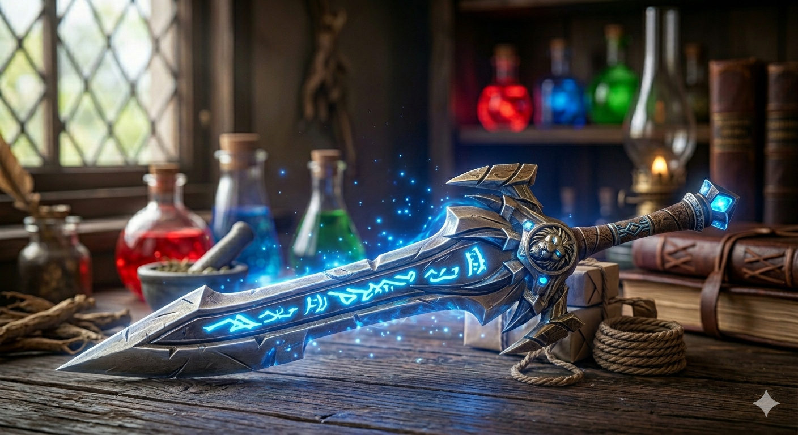
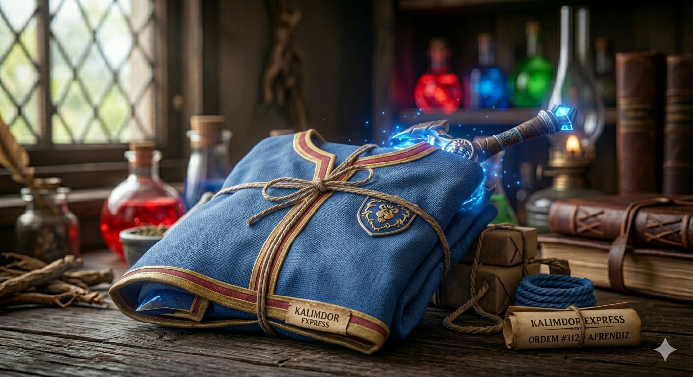

Artefatos Disponíveis
Itens dos campos de batalha e tavernas de Azeroth.
Pão de Centeio Macio

Recupera 5% da sua vida a cada segundo por 20 segundos. "Sempre fresquinho, feito com amor em Goldshire."
Preço: 25s
Poção de Cura Extraordinária

Uso: Restaura 1050 a 1750 de vida. "Destilada com as melhores ervas de Hibérnia. Não saia de uma masmorra sem ela!"
Preço: 2g 50s
Poção de Mana Extraordinária

Uso: Restaura 1350 a 2250 de mana. "Energia arcana líquida. Recomendada por 9 entre 10 Magos de Dalaran."
Preço: 3g
Quel'Delar, Poder dos Fiéis

Espada de Duas Mãos. Chance ao atingir: Aumenta seu Poder de Ataque em 250 por 10 seg. "Um artefato lendário forjado no Sol de Quel'Thalas e restaurado em águas sagradas."
Preço: 50.000g
Túnica do Aprendiz

Peito (Tecido). Armadura: 4. "Confortável, leve e com cheiro de aventura nova. Ideal para seus primeiros feitiços."
Preço: 10s